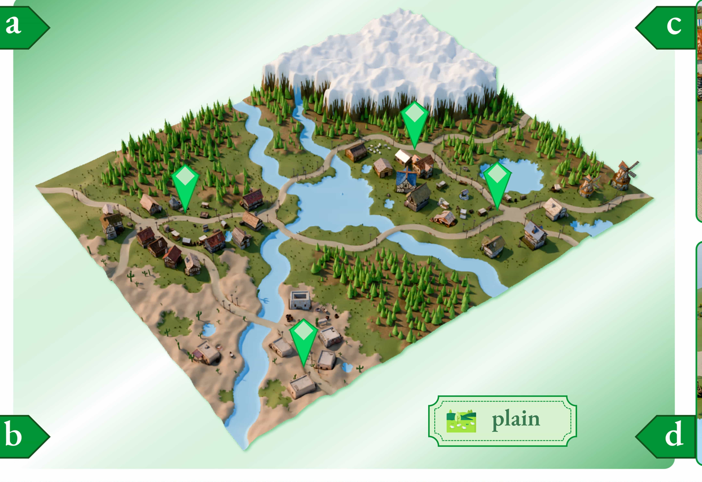
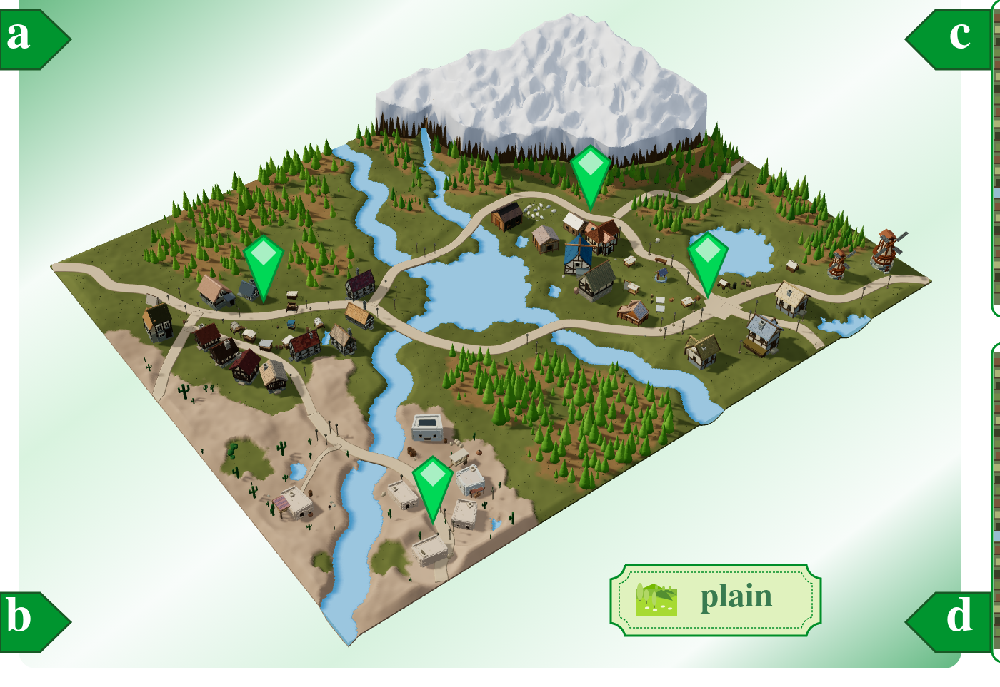
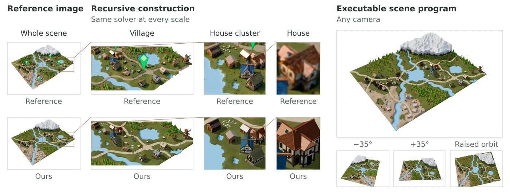
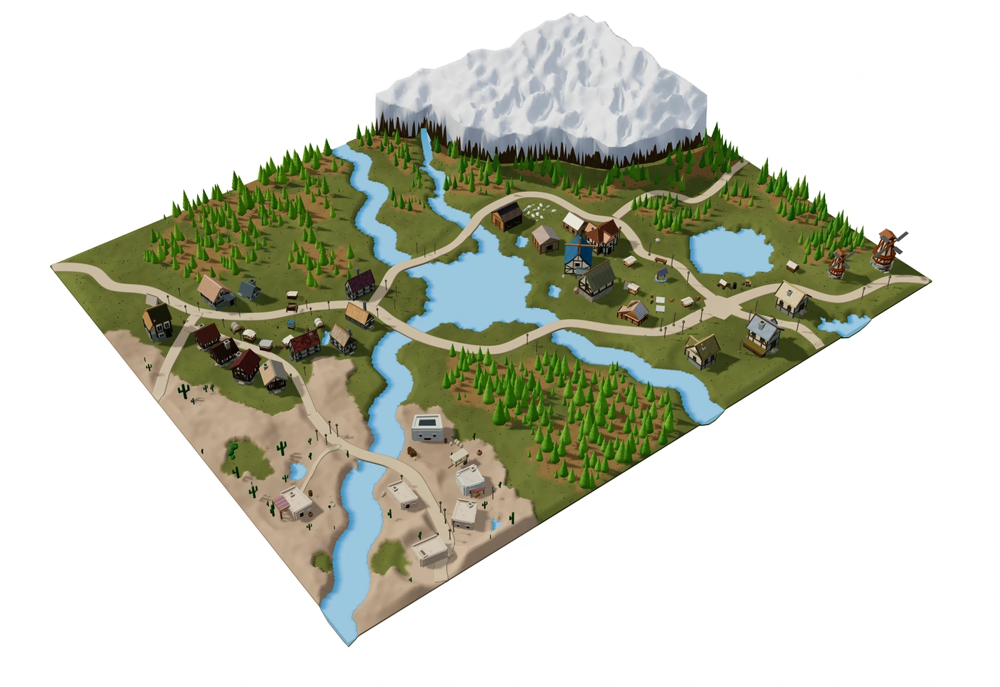
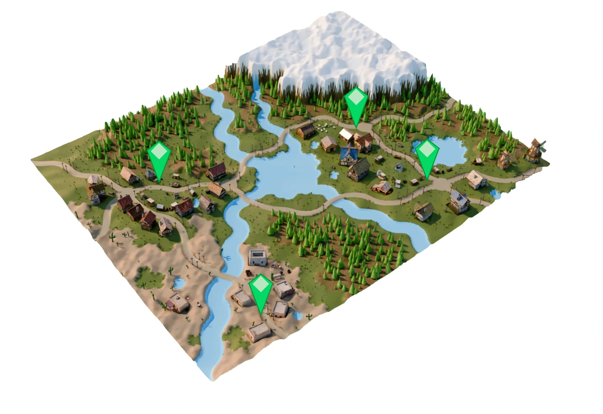
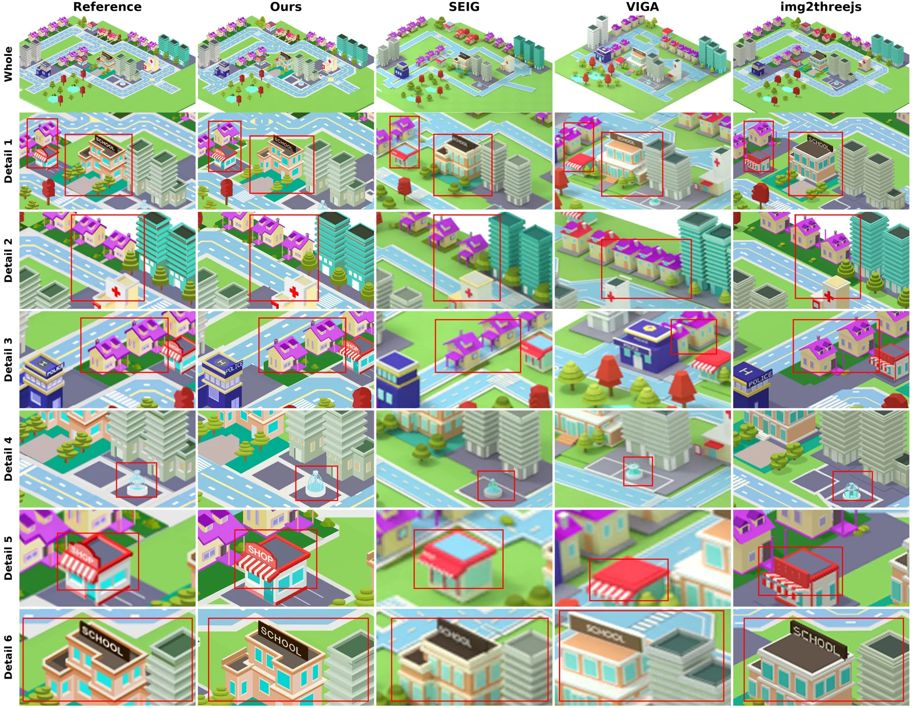

Whole scene
Depth 0

Each part receives a closer view of the reference and returns a scene program.
Georgia Institute of Technology

Code world models represent worlds as executable programs, but this representation alone does not determine how to construct a complex world. We introduce Recursive Code World Models (RCWM), a framework for reconstructing complex 3D worlds in code from a single reference image. RCWM couples a Recursive Scene Program (RSP) representation with a construction solver that recursively calls itself. An RSP represents the executable world as compositional scene code, while each solver call follows the same complete process: establish the whole, recursively reconstruct unresolved parts, and revisit the whole to refine their composition.
This global–local–global recursion gives fine-scale structures their own perception-and-editing loops while preserving scene-wide geometry and relationships. Reference-aligned views propagate a shared camera projection across levels, while parent revisitation addresses boundaries, spatial relations, and shared errors that emerge after local refinement. A vision-language coding agent directly compares reference images with scene renders to guide refinement, recursive descent, and return. Across complex scenes, RCWM outperforms prior code-based image-to-scene reconstruction methods. Ablation studies further support the benefits of recursive construction and suggest that deeper calls can improve finer-scale reconstruction. RCWM provides a recursive construction principle for building complex executable worlds from visual evidence.
Pick a part to see what it built itself and what its children returned. Drag to look around.
Everything delivered by scene, including its descendants.
Building the delivered scene…
Drag to orbit · Scroll or pinch to zoom
Open the root program ↗The live viewer could not load in this browser. These five saved renders show the delivered scene from other cameras.


Select a node to frame its program. ↑ parent · ↓ child · ← → siblings. On phones, scroll sideways for more.


Each part receives a closer view of the reference and returns a scene program.
Compare the reference with our reconstruction, then inspect the scene’s details.



@article{li2026rcwm,
title={Recursive Code World Models: Building Complex Worlds through Recursive Scene Programs},
author={Li, Zhiqi and Liao, Yuxuan and Zhu, Bo},
journal={arXiv preprint arXiv:2609.11499},
year={2026},
eprint={2609.11499},
archivePrefix={arXiv}
}